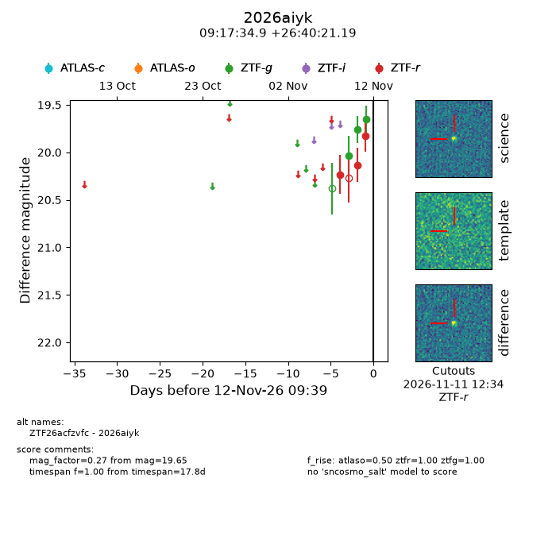
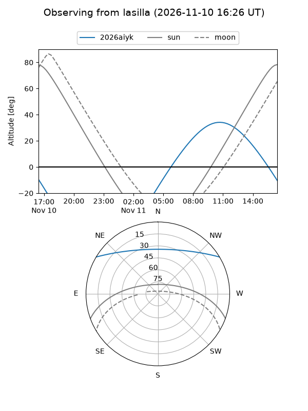
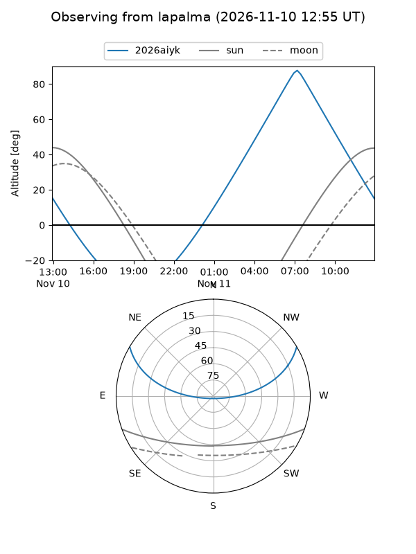
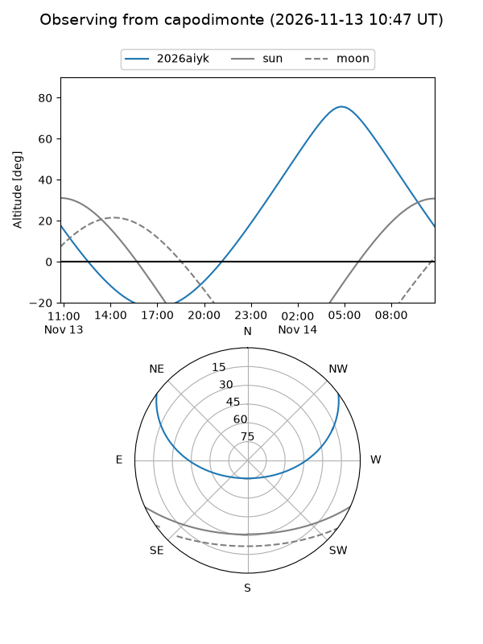
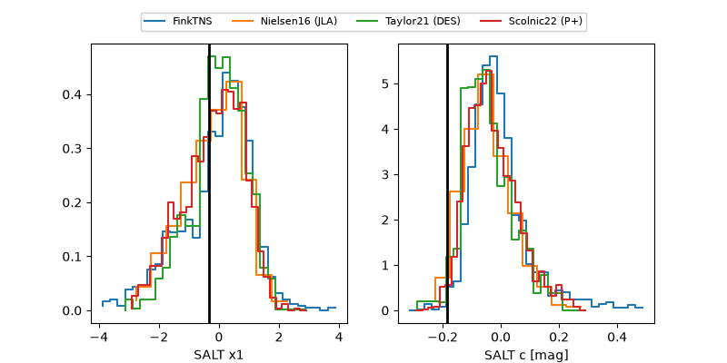

2026aiyk
Target 2026aiyk at 2026-11-12 09:45
Aliases and brokers:
FINK-ZTF: ztf.fink-portal.org/ZTF26acfzvfc
Lasair-ZTF: lasair-ztf.lsst.ac.uk/objects/ZTF26acfzvfc
ALeRCE-ZTF: alerce.online/object/ZTF26acfzvfc
YSE-PZ: ziggy.ucolick.org/yse/transient_detail/2026aiyk
TNS name: wis-tns.org/object/2026aiyk
Direct TNS query: direct search
alt names
ZTF26acfzvfc (ztf,fink_ztf)
2026aiyk (tns,yse)
Coordinates:
equatorial (ra, dec) = 139.3954,+26.67255
equatorial (HMS+DMS) = 09:17:34.90,+26:40:21.19
galactic (l, b) = (200.6022,+42.69841)
Flags:
peak dt:
Photometry:
last atlaso=nan, ztfg=19.65, ztfr=19.83
1 atlaso, 3 ztfg, 3 ztfr detections
Lightcurve

Visibility



Additional plots
